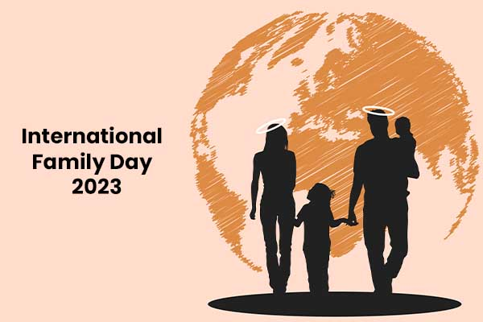
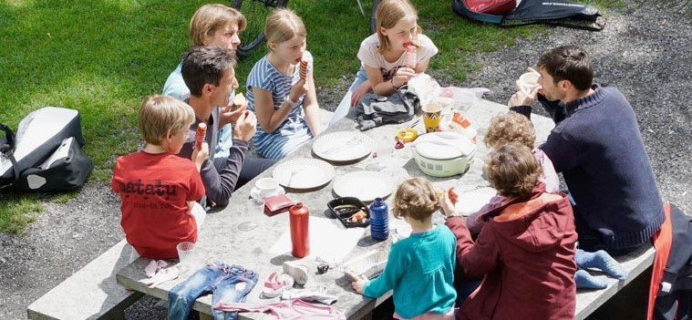

Провозглашён Генеральной Ассамблеей ООН в резолюции о Международном годе семьи.
Установление этого дня ставит целью обратить внимание общественности стран на многочисленные проблемы семьи.
«В семейной жизни самый важный винт – это любовь.»
Международный день семей (International Day of Families), отмечаемый сегодня, учрежден Генеральной Ассамблеей ООН в 1993 году. Установление этого дня ставит целью обратить внимание общественности стран на многочисленные проблемы семьи. По мнению Генерального секретаря ООН, когда попираются основные права одной семьи — единство всей человеческой семьи, членами которой они являются, находится под угрозой.
Идея учреждения этого праздника возникла давно: еще в 1989 году, желая обратить внимание общественности разных стран на проблемы семьи, Генеральная Ассамблея ООН провозгласила 1994 год Международным годом семьи. 20 сентября 1993 года Ассамблея приняла резолюцию, в соответствии с которой начиная с 1994 года 15 мая ежегодно стало отмечаться как Международный день семьи.


|  | 
|
|
|
 |
 |